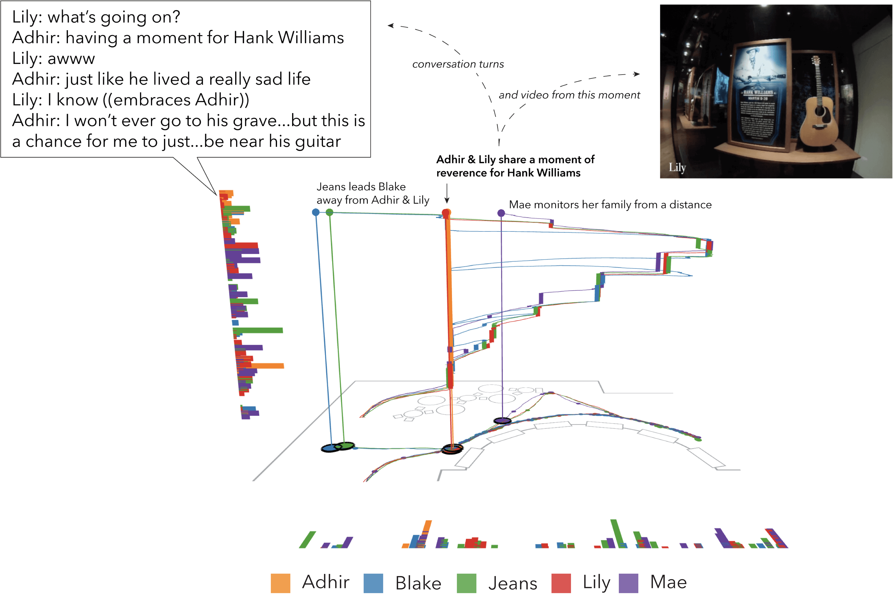

Figure 4. IGS screenshots illustrating example interaction techniques to explore the movement of materials during this interaction. (A) Select movement of jars of water and sand, (B) animate movement of a piece of paper held by a student, (C) layer the movement of all pieces of paper, (D) filter movement of paper when the teacher’s hands are not moving/at rest.
